Tonami, Toyama: things to do, food and stays
Tonami · Toyama
Tonami
Highlighted on the Toyama map.

Stay
メルキュール富山砺波リゾート&スパ
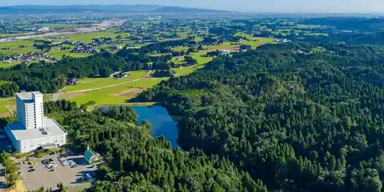
Merukyuru Toyama Tonami Resort & Supa
Resort hotel in Yasukawa, Tonami with buffet meals.
庄川温泉風流味道座敷 ゆめつづり
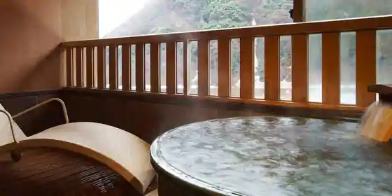
Shogawa Onsen Furyu Aji Michi Zashiki Yumetsuzuri
Inn at Shogawa Onsen in Shogawa, Tonami.
楽土庵 Rakudo_An
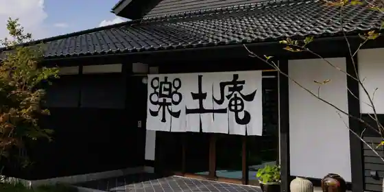
Rakudo Iori Rakudo_An
鳥越の宿 三楽園
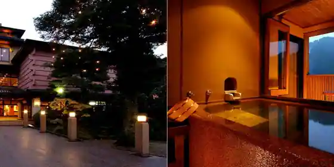
Torigoe No Yado Sanraku Sono
ホテルルートイン砺波インター
Hotel Route Inn Tonami Inta
Hotel at Danjobetsutennen Onsen in Taromaru, Tonami with a large communal bath.
アパホテル〈砺波駅前〉
APA Hotel < Tonami Ekimae >
Tabist ホテル となみ
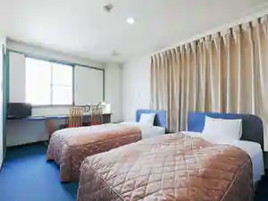
Tabist Hotel Tonami
Hotel in Omote, Tonami; 3-minute walk from Tonami Station.
寛政三年 すいげつろうホテル(2019年3月RE BORN)
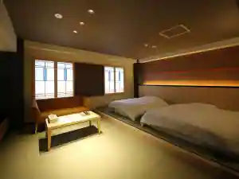
Kansei Sannen Suigetsuro Hotel (2019 Nen 3 Gatsu RE BORN)
Hotel in Omote, Tonami with private baths.
ホテルパークイン砺波インター
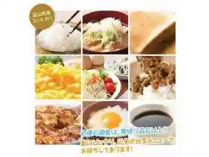
Hotel Park Inn Tonami Inta
Hotel in Taromaru, Tonami with breakfast available and parking.
楽土庵
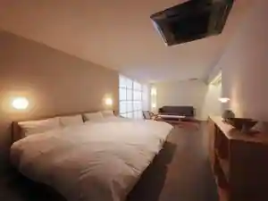
Rakudo Iori
人肌の宿 川金
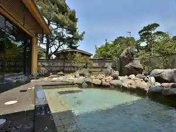
Hitohada No Yado Kawa Kin
Inn in Kaminakano, Tonami with local seafood dinners.
メルキュール富山砺波リゾート＆スパ
Merukyuru Toyama Tonami Resort & Supa
Resort hotel in Yasukawa, Tonami with buffet meals.
Dining
福助
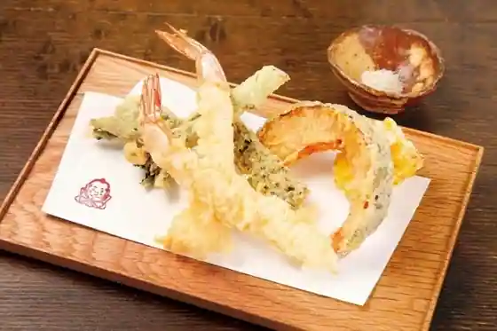
Fukusuke
鮎料理の店 鮎の里
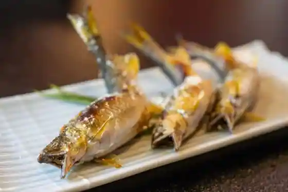
Ayu Ryori No Ayu No Sato
鮎の庄
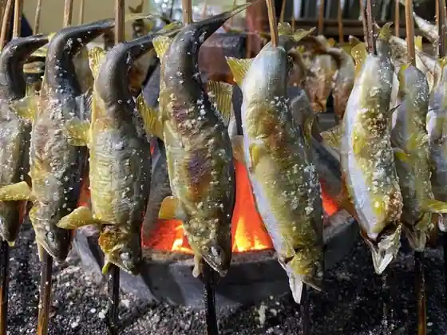
Ayu No Sho
竈flamme 炭三郎
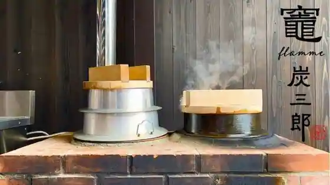
Kamado flamme Sumi Saburo
中華そば おっさん食堂
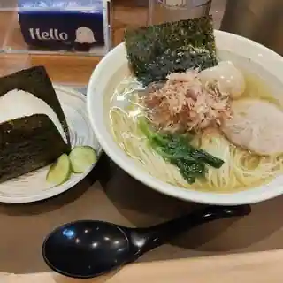
Chuka Soba Ossan Shokudo
さかなや工房海鮮蔵
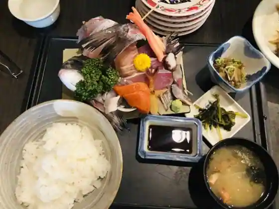
Sakanaya Kobo Kaisen Kura
鮎や
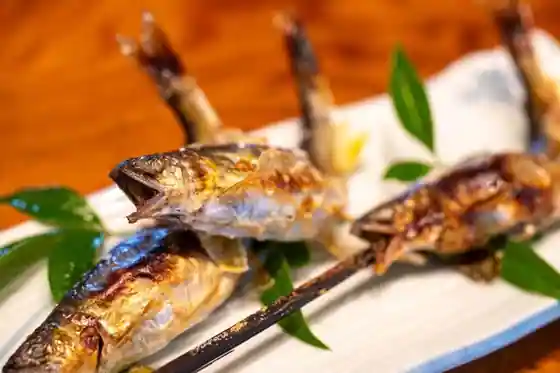
Ayu Ya
田園の食卓 ノエル
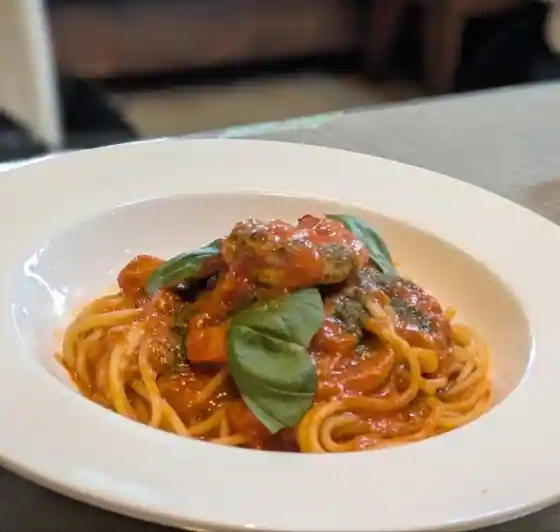
Den'En No Shokutaku Noeru
川なべ
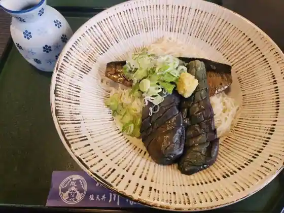
Kawa Nabe
め組 砺波店
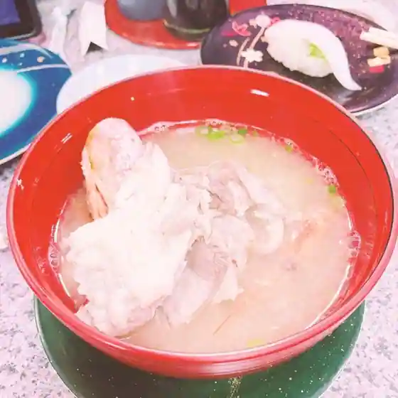
Me Kumi Tonami
グルメどころタベタリーテ
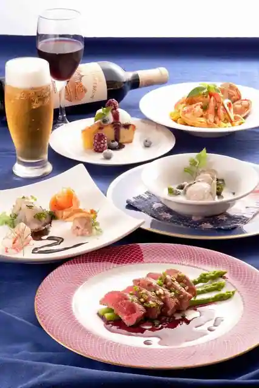
Gurume Dokoro Tabetarite
果味心庵 長者
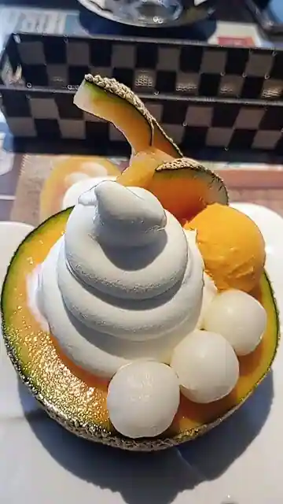
Ka Aji Kokoro Iori Choja
御菓蔵 直売店
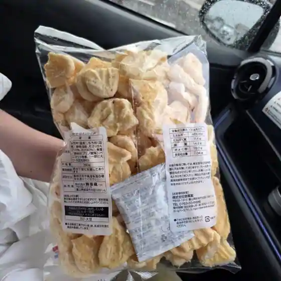
O Ka Kura Chokubai
農家レストラン大門
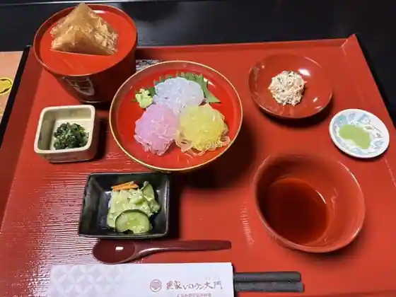
Noka Restaurant Daimon
洋食 cafe 梟
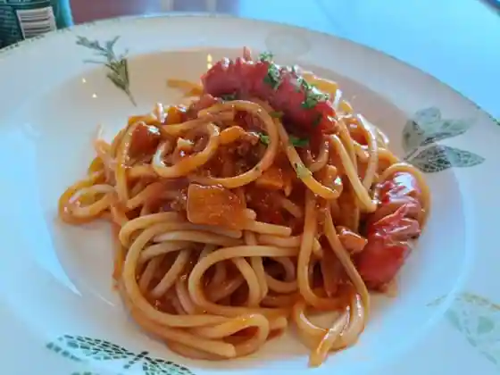
Yoshoku cafe Fukuro
手打ちうどん 田じま
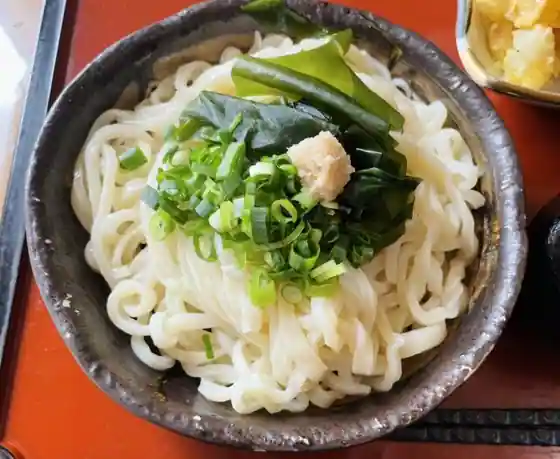
Teuchi Chiudon Ta Jima
フランス菓子＆カフェ ラ・ピニヨン
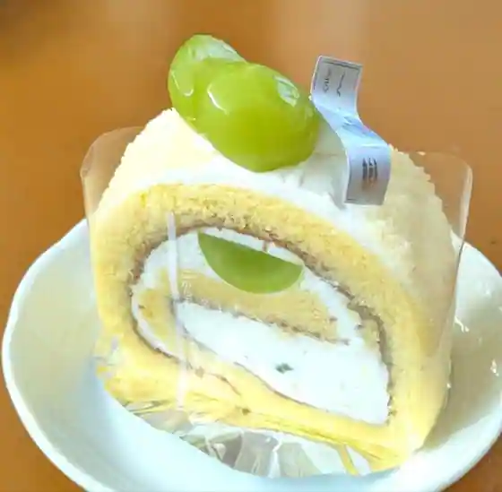
Furansu Kashi & Cafe Ra Piniyon
となみ幸ずし
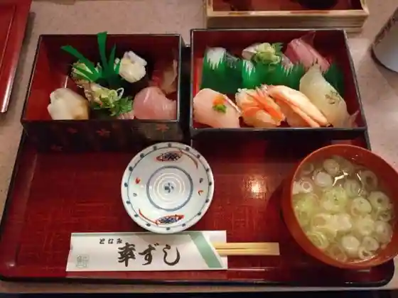
Tonami Sachi Zushi
御料理 樋渡
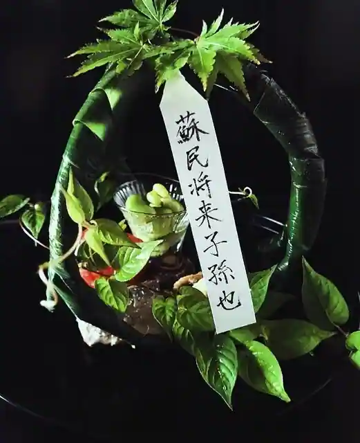
Goryo Ri Hiwatari
よっちゃん
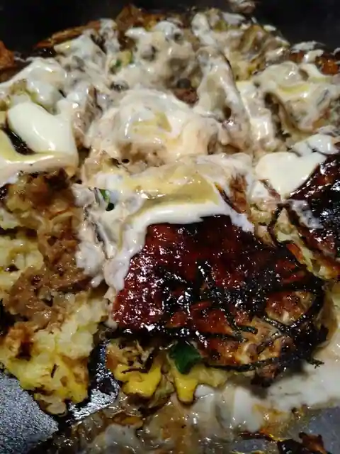
Yotchan
アクアフレスカ
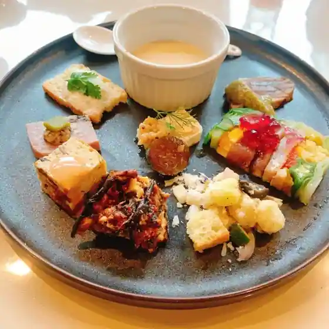
Akuafuresuka
砺波の天然鮎と海鮮レストラン 魚安
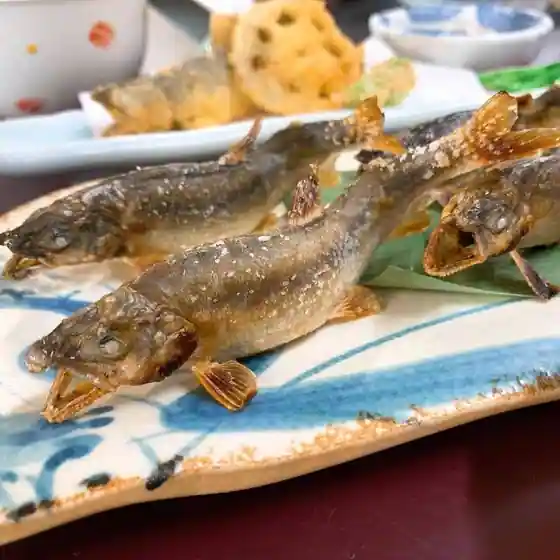
Tonami No Tennen Ayu To Kaisen Restaurant Sakana An
Sights
Saburomaru Joryujo (Wakatsuru Shuzo)

Tonami Churippu Park Kokia no Ohana Dan

Shogawa Kyo

Shogawa Onsen Sato

Shogawa Kyo Yuransen
Sankyo Village Lookout / Viewpoint Plaza
Okaki Tokoro O Ka Kura (O Ka Kura Museum Heisetsu)
Churippu Shiki Sai Kan
Roadside Station Tonami
Tonami Churippufea
Masuyama Castle Ruins
Noka Resutoran Daimon
Joryujo Kengaku Tour (Saburomaru Joryujo)
Tonami Sachi Zushi
Torigoe no Yado Sanraku Sono
Shokusai In Tokoro Hiko Hiko Tei
Tonami Kamiwada Ryokuchi Campground
Shogawa Great Buddha
Roadside Station Shogawa
Komaki Dam
Jun Sai Irori Chaya (Ayu no Sho)
Hokuriku Koka · Korapurodakutsu Tonami Kojo
Kenmin Park Rai Sei Forest
Kansei Sannen Suigetsuro Hotel
Yume no Taira Kosumosu So
Shogawa Mizu Memorial Park (Shogawa Uddo Plaza)
Tonami Art Museum
Uri Retsu Shimizu
Ayu Ryori no Mise Ayu Village
Tonami Yume no Taira Ski Area
Tonami no Shogawa So Ichiman Tei
Ka Aji Kokoro Iori Choja (Kyu, Farm Kafe Noko Bo Choja)
Tonami Sankyo Village Museum
Kumiko Saiku Experience (Kawashima Tategu)
Etchu Sansuke Yaki Kamamoto
Ayu Ryori Senmonten Ayu Ya
Wa Dan Shoku Kan Nenrin
Shogawa Onsen Furyu Aji Michi Zashiki Yumetsuzuri
Kawashima Tategu
O Shokuji Tokoro Kokorozashi Ge no
Sutekihausu Puromunado Momiji
Hitohada no Yado Kawa Kin
Watashi to Ichigo
Takasu Tobu Shishi Mai
Miyako Hisashi Shi
Kisetsu Ryori Tetsu
Benzaiten Park
Rakudo Iori
Gen Sho Tera
Tonami Local History Museum
Shogawa Seiryu Park
Noji Kumiai Hojin Gaia Tonami
Shinmei Ya
Matsukawa Jo Teibo to Akamatsu Namiki
Manpukuji Yamato
Yoroi Kabe
Tonami Saburomaru Ta Matsuri Andon
Hotel Terao Onsen
Yogashi Kissa Shatore
19 HITOYASUMI
Nagao Tamekage no Tsuka
Basho Kuhi
Merukyuru Toyama Tonami Resort & Supa
Wafu Hall
Apa Hotel (Tonami Ekimae)
Tourist Farm Umeka no O Niwa
COFFEE LOUNGE Manderin
Kugyo Kyu Nin Tsuka
Shogawa Mizu Museum
Matsu Village Sotojiro Kinen Shogawa Art Museum
Jun Sai no Ibuki Heri Sora
Kawa Nabe
Otate Yama no Yakatato
Matabe Shimizu
Saigyo Kahi
Osuteria ACQUA FRESCA
Tonami Yakusho